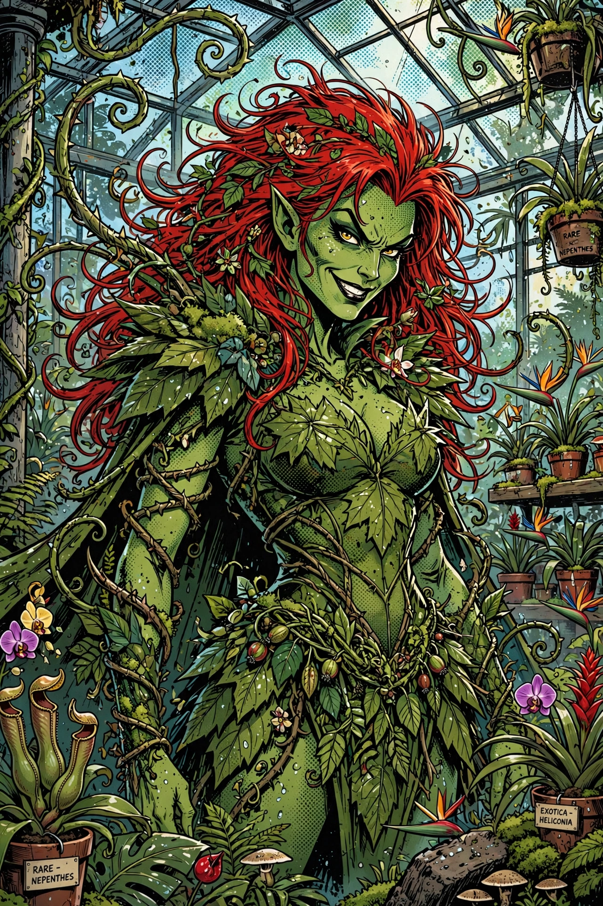

| Publisher | DC Comics |
| First appearance | Batman #181 (June 1966) |
| Created by | Robert Kanigher, Sheldon Moldoff |
| Alter ego | Dr. Pamela Lillian Isley |
| Abilities | Control of plant life, plant toxins, pheromones, immunity to poisons |
| Affiliations | Gotham City Sirens, Injustice League, Birds of Prey |

Poison Ivy is a fictional character appearing in American comic books published by DC Comics, commonly in association with the superhero Batman. Created by writer Robert Kanigher and artist Sheldon Moldoff, she first appeared in Batman #181 (June 1966). Her real name is Dr. Pamela Lillian Isley, a botanist-turned-ecoterrorist whose experiments gave her immunity to toxins and control over plant life.
In most versions, Isley was a brilliant Gotham botanist seduced or betrayed into experiments with plant toxins — in the post-Crisis origin by the villain Jason Woodrue — that transformed her blood into chlorophyll, tinted her skin green, and granted her power over flora, together with pheromone control over people and a poisonous kiss. Thereafter she wages an extremist campaign to protect the environment, placing her in conflict with Batman and the corporate polluters of Gotham City. She is typically housed in Arkham Asylum when captured.
Poison Ivy is usually depicted as a seductive femme fatale and one of Batman's most enduring adversaries, but modern stories increasingly portray her as an anti-heroine driven by genuine ecological catastrophe. Her close friendship — and, in later continuity, romance — with Harley Quinn, introduced in the 1990s animated series and developed in the "Gotham City Sirens" team-ups with Catwoman, became one of her defining relationships.
Uma Thurman played Poison Ivy in the film Batman & Robin (1997). Diane Pershing voiced her in Batman: The Animated Series (1992–95), a portrayal that cemented her popularity; she has since appeared across DC animation, video games such as the Arkham series, the Harley Quinn animated series, and the television series Gotham.